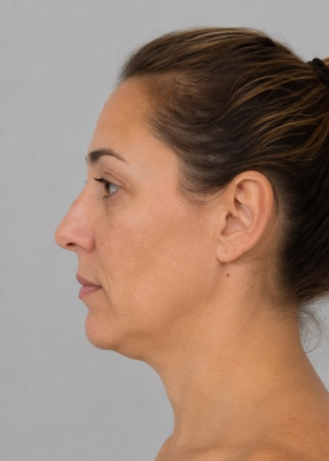
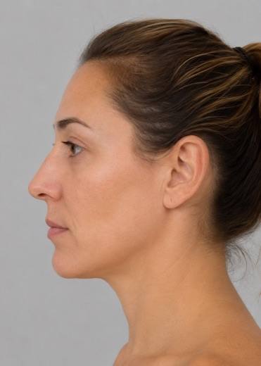
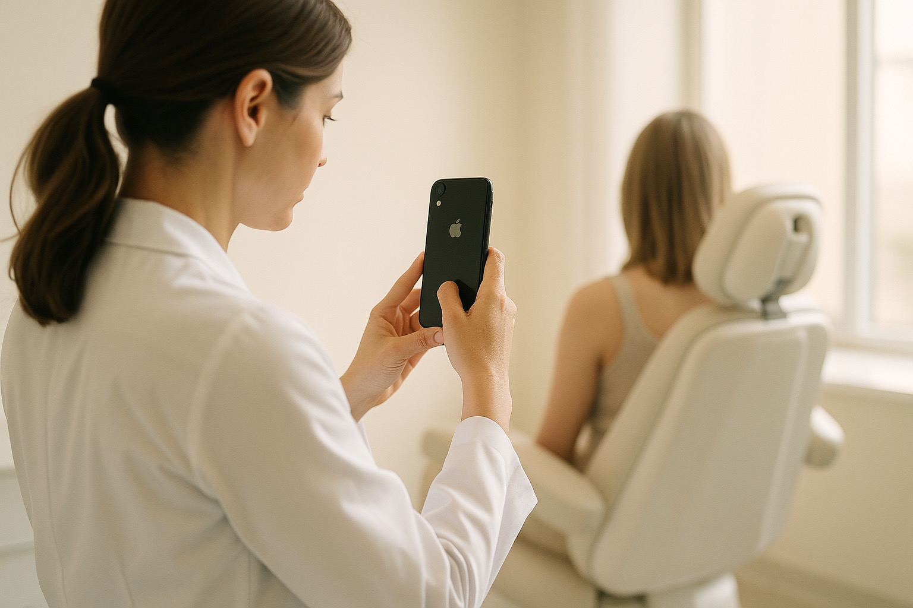
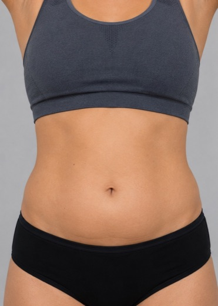
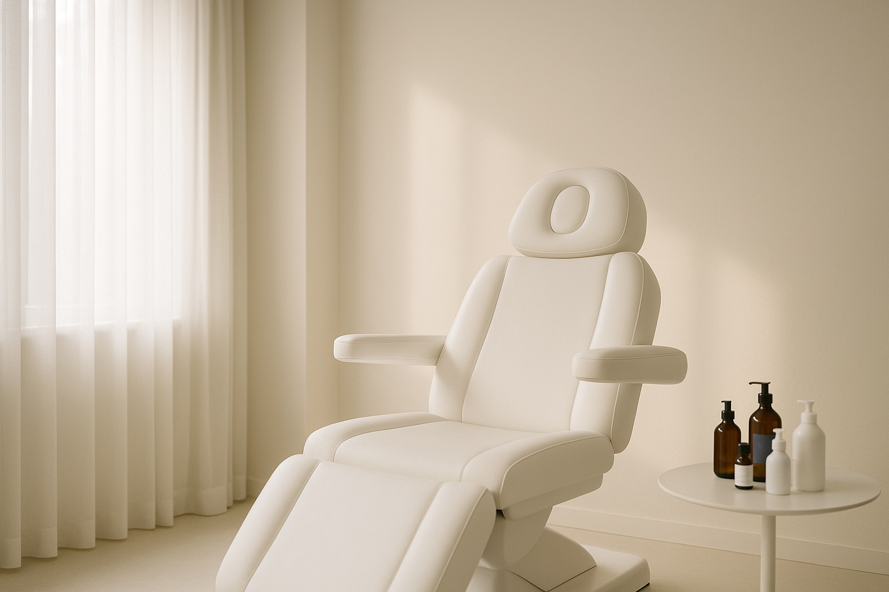

La cámara fantasma superpone la foto anterior del paciente y te guía — ángulo, distancia y encuadre en verde cuando todo coincide. Comparativas profesionales sin fotógrafo, sin estudio, sin adivinar.
Gratis durante el lanzamiento · Hecho para clínicas estéticas

−12° · 0.5x
+7° · 2.1x
EL ESTUDIO ES TU CONSULTORIO · EL EQUIPO, TU TELÉFONOCada control fotográfico es una secuencia: primero la base, después la repetición exacta, al final la prueba del resultado.
En la primera visita registrás la sesión inicial: frente, perfil, lo que tu tratamiento necesite. La app las etiqueta y las guarda en la ficha del paciente.

ABDOMENEn el control, la foto anterior aparece superpuesta en la cámara. Silueta, grados y zoom pasan de rojo a verde cuando el encuadre coincide. Ahí disparás.
Elegís las fotos y la app arma la comparativa: lado a lado, deslizador o video animado, con tu logo y fondo uniforme. Lista para el paciente o tus redes.
Recorta a la persona y unifica el fondo en el color de tu clínica. Dos fotos de días distintos, un mismo estudio.
Barra o círculos sobre los ojos con un toque, para compartir preservando la identidad del paciente.
Logo, etiquetas y bordes con los colores exactos de tu clínica, guardados como favoritos.
La comparativa también se exporta como video con transición, listo para reels e historias.
Sesiones, comparativas y álbumes ordenados por paciente y tratamiento. Todo se encuentra en dos toques.
Tu equipo trabaja sobre la misma biblioteca: lo que se fotografía en un consultorio aparece en todos.
Las tratamos como tales: la app está pensada para consultorios que se toman en serio el consentimiento y la protección de datos.

Descargala gratis, cargá tu primer paciente y sacá la primera sesión hoy. La próxima foto ya sale guiada.